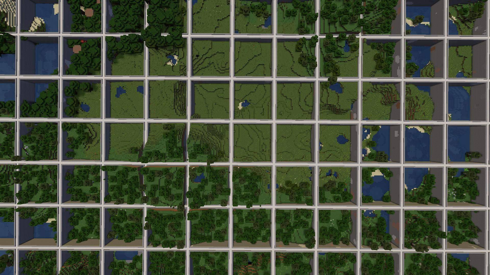

We no longer offer any support for Minecraft 1.8.8 to 1.12.2.
Only Minecraft Java Edition 1.13+ is supported.
New Version 5
Version 5 is the newest major version of PlotSquared.
This version contains a lot of bug fixes, a completely
rewritten flag system, performance improvements and
much more.
This version will soon be available to download from
Spigot
500k downloads
6 years of development
3000+ commits
What is PlotSquared?
PlotSquared is a land and world management plugin. It includes several highly configurable world generators.
You can create plots of land in existing worlds using plot clusters, or you can have a full world of plots.
Read More On Spigot
Customisable Generation
All components of a plot, walls, to the plot fillings,
are customisable.
You can also use schematics to spice up your roads
and plots. Endless possibilities!
Per-Plot Configuration
PlotSquared has an extensive flag system
that allows players to modify all aspects
of gameplay within their plots

Vanilla Terrain
You can create plots with vanilla terrain
and roads, or no plot features at all
You can even create plot clusters in
vanilla worlds!